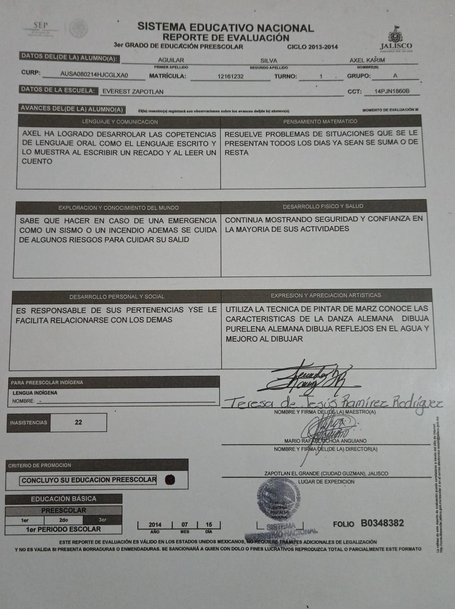
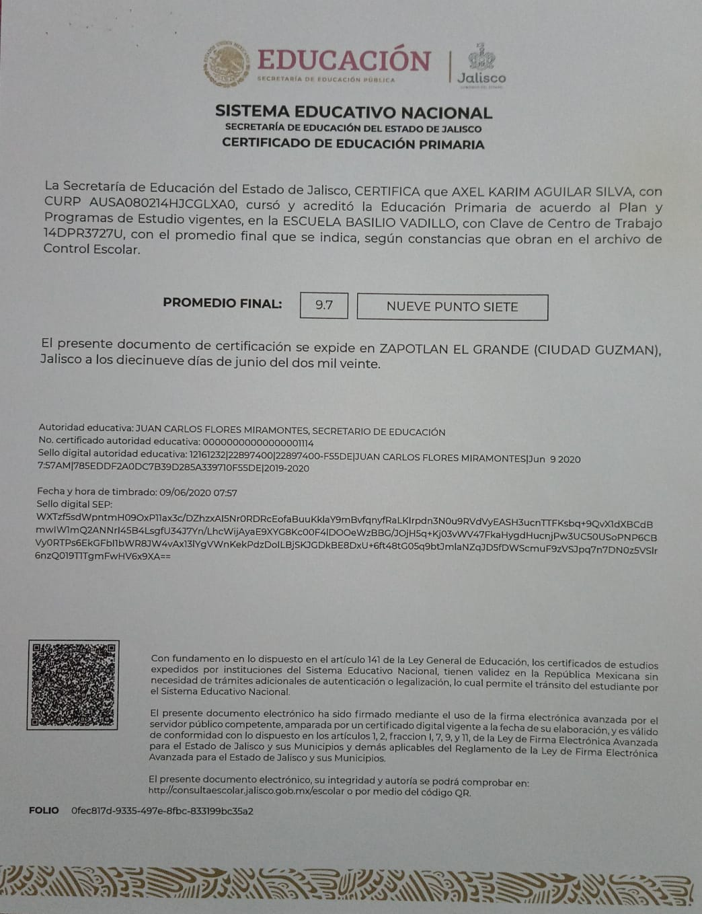
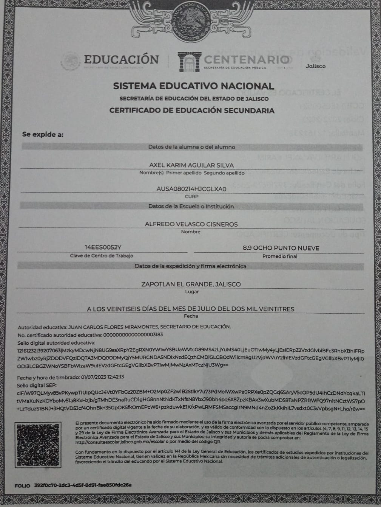

Escolaridad
KINDER
Nombre de la institución:
Colegio Begsu (1° kinder)Ubicacion:
F, Revolución 50, Morelos, 28217 Manzanillo, Col.Año inicio:
2011Año fin:
2012Campo de Estudio:
Educación PreescolarNombre de la institución:
Jardin de Niños Anexo al Cren (2° kinder)Ubicacion:
Calz Madero y Carranza, Cd Guzmán Centro, 49000 Cdad. Guzmán, Jal.Año inicio:
2012Año fin:
2013Campo de Estudio:
Educación PreescolarNombre de la institución:
Colegio Everest Institute(3° kinder)Ubicacion:
Colón 40, C. Corregidora 32, Cd Guzmán Centro, 49000 Cdad. Guzmán, Jal.Año inicio:
2013Año fin:
2014Campo de Estudio:
Educación PreescolarDocumento Recibido:
PRIMARIA
Nombre de la institución:
Colegio Vigotsky (1° primaria)Ubicacion:
Colón 40, Emiliano Zapata, 49026 Cdad. Guzmán, Jal.Año inicio:
2014Año fin:
2015Campo de Estudio:
Educación PrimariaNombre de la institución:
Escuela Primaria Basilio Vadillo (2° primaria)Ubicacion:
C. Antonio Caso 90, Centro, 49000 Cdad. Guzmán, Jal.Año inicio:
2015Año fin:
2016Campo de Estudio:
Educación PrimariaNombre de la institución:
Escuela Primaria "Agustín Yañéz" (3° y 4° primaria)Ubicacion:
Blvd. Sta. Fé 94, 45653 Hacienda Santa Fe, Jal.Año inicio:
2016Año fin:
2018Campo de Estudio:
Educación PrimariaNombre de la institución:
Escuela Primaria Basilio Vadillo (5° y 6° primaria)Ubicacion:
C. Antonio Caso 90, Centro, 49000 Cdad. Guzmán, Jal.Año inicio:
2018Año fin:
2020Campo de Estudio:
Educación PrimariaDocumento Recibido:
SECUNDARIA
Nombre de la institución:
Escuela Secundaria Técnica 100 (1° secundaria)Ubicacion:
Licenciado Enrique Castellanos Aguilar 100, 49026 Jal.Año inicio:
2020Año fin:
2021Campo de Estudio:
Educanción SecundariaNombre de la institución:
Escuela Secundaria "Francisco R Almada Almada" CODE (2° secundaria)Ubicacion:
Av. Juan José Arreola Zúñiga 1145, Cd Guzmán, 49026 Cdad. Guzmán, Jal.Año inicio:
2021Año fin:
2022Campo de Estudio:
Educanción SecundariaNombre de la institución:
Escuela Secundaria Fóranea 5 "Alfredo Velasco Cisneros" (3° secundaria)Ubicacion:
C. Jazmin 31, Constituyentes, 49000 Cdad. Guzmán, Jal.Año inicio:
2022Año fin:
2023Campo de Estudio:
Educanción SecundariaDocumento Recibido:
